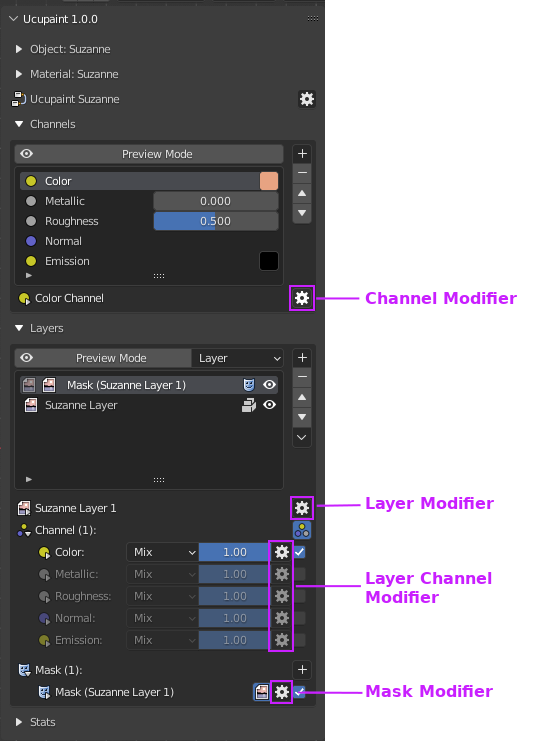
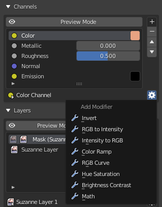
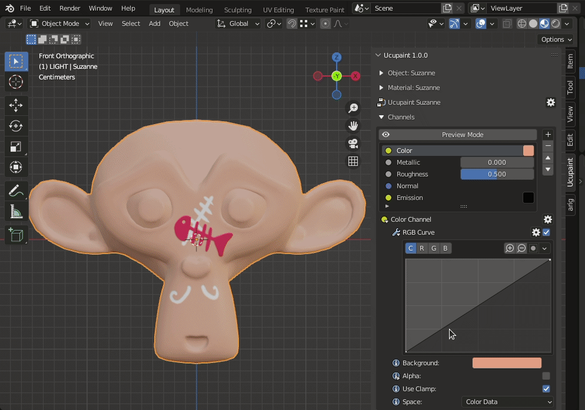
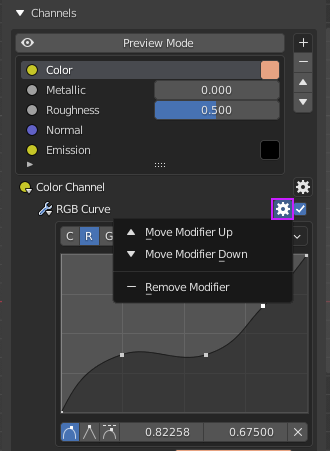

Modifier
Modifiers are useful to add non destructive effects to a layer, mask, layer channel, or the main channel itself.
|  |
|---|
| Various modifier menu locations |
Keep in mind that not all modifier types are available for every item type. For example, there are only three modifiers available for masks (Invert, Ramp, and Curve).
Adding Modifier (Quick Guide)
Let's try to add a modifier on the color channel. You can see more details about modifier types here. For now we will try using the RGB Curve modifier.
||
With the RGB curve modifier applied, you can adjust the output of the color channel with a curve.
|  |
|---|
| Adjusting color with RGB Curve modifier |
Note
Final part of the Quick Guide is about Baking Channels to textures and saving them, click here to continue
Modifier types
- Invert: will invert selected rgb and alpha values
- RGB to Intensity: will convert the rgb of your layer to intensity/alpha and replace layer rgb values themselves with a single color.
- Intensity to RGB: will convert the alpha of your layer to rgb and replace layer alpha value itself with a solid value
- Color Ramp: will map the layer rgb values to a color ramp
- RGB Curve: will tweak the rgb values using curve
- Hue Saturation: will tweak the rgb values using hue and saturation parameters
- Brightness Contrast: will tweak the rgb values using brightness and contrast parameters
- Math: will tweak the rgb and alpha values using math operations
Modifier orders
Be aware if you have more than one modifier, modifier order will affects the result. The order is from bottom to top, so the top modifier will be executed last. You can edit modifier order using this menu.
|  |
|---|
| Menu for reordering modifier |
Transition
Transition is special modifier that can be only added to a Normal layer channel, but will affect other channels.
| Transition Bump |